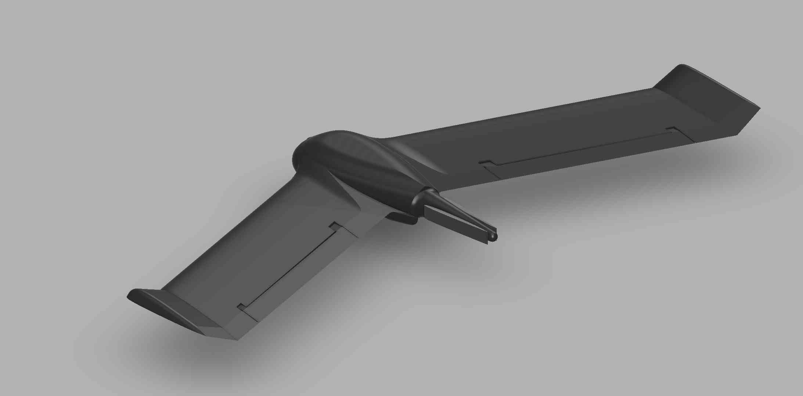
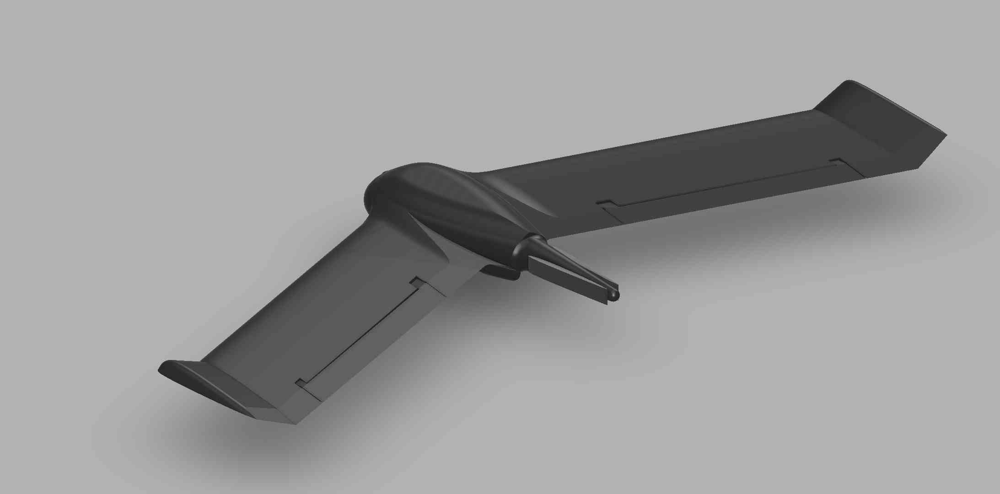

À Propos de Wingman
Wingman représente une avancée majeure dans la technologie de surveillance aérienne. Conçu pour une utilisation écologique et efficace, il offre une solution innovante pour la gestion de la faune et la protection des cultures.
Les ravages causés par les animaux dans les cultures sont un défi constamment croissant pour les agriculteurs. Wingman intervient en tant que solution intelligente, patrouillant les zones agricoles et détectant les animaux indésirables. Grâce à ses capacités de surveillance avancées, il contribue à minimiser les pertes de récolte en prenant des mesures préventives.
Introduction
Wingman est une aile volante autonome avec une station de chargement qui est capable de patrouiller une zone voulue et de détecter des animaux et personnes avec une suite de caméras thermiques et optiques. Son rôle principal sera donc la surveillance de zones prédéfinies, et la défense de ces zones contre des animaux qui pourraient endommager les sols et plantations (oiseaux, sangliers, ...) au moyen de systèmes sonores et lumineux.
Tiers de Service
Service Préventif
L'aile volante surveille en continu les mouvements des animaux dans les zones agricoles. Grâce à ses capacités de surveillance avancées, elle identifie les comportements suspects et alerte les agriculteurs pour prendre des mesures préventives.
Service Actif
En cas de détection d'animaux indésirables, l'aile volante active un système sonore puissant pour effrayer les animaux et les éloigner des zones cultivées. Cette intervention immédiate aide à protéger les cultures contre les dommages potentiels.
Service Proactif
Utilisant des technologies avancées, l'aile volante prédit les zones à risques et estime la présence de nuisibles en détectant des signes de dégâts, même lorsque les animaux ne sont pas visibles. Cette approche proactive permet une gestion anticipée des risques pour minimiser les pertes de récolte.
Caractéristiques techniques
- Design : Aile volante en polymères légers mais durables
- Propulsion : Hélice arrière et moteur électrique BLDC
- Contrôle de vol : Ordinateur de vol dédié avec GPS et IMU 9 axes
- Ordinateur de bord : SOC RK3588s avec 8GB de RAM
- Système d'exploitation : Linux Debian (Armbian)
- Communication : Modem 4G
- Système sonore : Amplificateur connecté en I2S
- Système lumineux : Contrôlé par PWM
- Capteur TOF : Time of Flight pour l'altitude
- Caméras : Caméra thermique (Flir Boson®+ CZ 14-75) et caméra optique haute résolution
Galerie
 

Contactez-Nous
Pour plus d'informations sur Wingman, veuillez nous contacter à: contact@wingmanproject.com